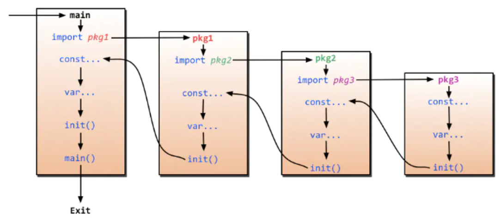

go 一百问
Q1: 为啥需要私有goproxy？
上下文
我们知道在大陆的网络环境是无法访问到
http://golang.org等http://goproxy.io或七牛主导的http://goproxy.cn。
在企业里，有很多情况是生产网络或测试网络环境是无法正常访问外网的，为了解决这个问题可能需要自己搭建一个proxy来管理依赖包。
可选配置
1 | export GOPROXY=https://mirrors.aliyun.com/goproxy/ |
Q2: Make和New的异同？
- slice、map和channel，使用make
- array、struct和所有的值类型，使用new
内置函数 new 计算类型的⼤小，为其分配零值内存，返回指针。⽽ make 会被编译器翻译成具体的创建函数，由其分配内存和初始化成员结构，返回对象⽽⾮指针。new和make都是在堆上分配内存，只是行为有所不同。new分配完后会返回指向其的内存地址(指针)，make是返回整个数值/对象。
Q3: 数组和切片陷阱
陷阱一
1 | func foo(a [2]int) { |
改
1 | func foo(a *[2]int) { |
或
1 | func foo(a []int) { |
陷阱二
1 | func foo(a []int) { |
改
1 | func foo(a []int) []int { |
或
1 | func foo(a *[]int) { |
Q4: for vs for…range的性能问题
与 for 不同的是，range 对每个迭代值都创建了一个拷贝。因此如果每次迭代的值内存占用很小的情况下，for 和 range 的性能几乎没有差异，但是如果每个迭代值内存占用很大，两者的差距就很明显了.
陷阱一
1 | // for 语句中的迭代变量在每次迭代中都会重用, 即 for 中创建的闭包函数接收到的参数始终是同一个变量, 在`goroutine`开始执行时都会得到同一个迭代值 |
改
1 | func main() { |
或
1 | func main() { |
Q5: 字符串如何实现高效拼接?
一般我们拼接字符串时，会使用如下几种方式：
- 使用操作符
+，此方式最差- 使用
fmt.Sprintf- 使用
strings.Builder，此方式最佳- 使用
bytes.Buffer- 使用
[]byte
感兴趣的朋友，可以使用benchmark做下测试
Q6: 常见导致Go程序OOM的情况
- 递归调用函数导致栈溢出
Goroutine永久不退出，单个协程一般占4k，若堆积，就会导致OOM
Q7: 如何退出协程?
超时陷阱
1 | func doBadthing(done chan bool) { |
上述doBadthing协程，永久不会退出，会死锁的，针对上述问题，可以有哪些解决办法?
- 思路一：保证协程能够执行完毕，不至于一直阻塞，可以给
channel设置缓冲区
eg:done := make(chan bool, 1) - 思路二：仿照主函数
timeout，也利用select来尝试发送，发送失败也能理解返回1
2
3
4
5
6
7
8func doGoodthing(done chan bool) {
time.Sleep(time.Second)
select {
case done <- true:
default:
return
}
}
Q8: 可以强制kill掉goroutine吗?
答案是不能，goroutine只能自己退出，而不能被其他goroutine强制关闭或者杀死
Q9: 如何优雅正确的关闭通道?
我们知道一个已经关闭的channel，如果尝试再次close，会导致panic，虽然可以通过recover使程序恢复正常，但很粗鲁；作为文明人，自然要礼貌.
1 | type MyChannel struct { |
Q10: 请列举一些你所知道的内置函数?
- len、cap
- close、copy、append
- panic、recover
- new、make
Q11: Go语言的执行过程是? 或者说init函数的执行时机是?

init函数是Go程序初始化的一部分，而Go程序的初始化先于main函数；runtime会在运行时解析包依赖关系，依次完成初始化，执行顺序如下：
1 | import –> const –> var –> init() –> main() |
Q12: map如何顺序读取?
map是无序的，不能顺序读取，要想顺序读取，第一个要解决的问题就是，把ｋｅｙ变得有序，然后通过key取值。
Q13: 说出一个context包的用途
- 避免
Goroutine内存泄漏下面的 for 循环停止取数据时，就用 cancel 函数，让另一个协程停止写数据。如果下面 for 已停止读取数据，上面 for 循环还在写入，就会造成内存泄漏。1
2
3
4
5
6
7
8
9
10
11
12
13
14
15
16
17
18
19
20
21
22
23
24
25func main() {
ctx, cancel := context.WithCancel(context.Background())
ch := func(ctx context.Context) <-chan int {
ch := make(chan int)
go func() {
for i := 0; ; i++ {
select {
case <- ctx.Done():
return
case ch <- i:
}
}
} ()
return ch
}(ctx)
for v := range ch {
fmt.Println(v)
if v == 5 {
cancel()
break
}
}
}
Q14: 如何跳出for select循环?
通常在for循环中，使用break可以跳出循环，但是注意在go语言中，for select配合时，break 并不能跳出循环
1 | func ForSelectLoop(ch chan bool){ |
Q15: 哪些情况，会导致go触发异常?
- NPE，空指针异常，对空指针做了解析引用
- 索引溢出/下标越界
- 除数为0
- 调用panic函数
Q16: Slice的原理是啥?
切片是基于数组实现的，它的底层是数组，它自己本身非常小，是只有3个字段的struct类型：
- 指向底层数据的指针
- 切片的长度
- 切片的容量
Q17: Map的底层实现是基于什么数据结构?
散列表
Q18: 多个defer函数同时存在时，程序会如何处理?
先进后出，后进先出的栈处理方式defer在return语句之后执行，但在函数退出之前，defer可以修改返回值
Q19: 空Select有什么用，如何避免死锁?
- 阻塞主协程
- 主线程内，存在其他运行的协程即可
Q20: 空结构体struct{}占内存空间吗，可以在哪些场景下使用
struct{}不占用内存空间，unsafe.Sizeof可说明
实用场景
- 基于map实现set，对于集合来说，只需要map的键，而不需要值
- 不发送任何数据的信道，只用来通知子协程(goroutine)执行任务，或只用来控制协程并发度
- 仅包含方法的结构体，虽说可以为任意数据结构绑定方法，但其他类型都需要占用额外的内存空间
Q21: Go里面，有异常类型的概念吗？
Go 没有异常类型，只有错误类型（Error），通常使用返回值来表示异常状态
Q22: 什么是 rune 类型?
正常ASCII码的所有值，只需要7bit就能全部表示，但只能表示英文字母在内的128个字符；为了统一世界上所有的语言，引入了Unicode编码，它是ASCII的超集；
它能表示所有字符，而Go里面，unicode称之为rune，是int32类型的别名；在Go语言中，字符串的底层表示是byte(8bit)序列，而非rune(32 bit)序列。
Go的默认字符串编码方式是UTF8，一个汉字占3个字节。下面的输出，你看懂了吗?
1 | fmt.Println(len("Go一百问")) // 11 |
Q23: 字符串打印时，%v和%+v的区别
%v 和 %+v 都可以用来打印 struct 的值，但%v 仅打印各个字段的值，%+v 还会打印各个字段的名称
Q24: Go中如何定义enum枚举值
使用常量(const)来表示枚举值
1 | type EnumType int32 |
Q25: Go语言的局部变量是分配在栈上，还是堆上?
这个由编译器决定，当Go编译器检测到变量逃出其作用域(内存逃逸)时，就会将其分配到堆上，防止因函数调用结束，其对应的资源被释放，而出现变量无法被问题的问题
通常当变量的作用域没有超出函数范围时，变量就可以被分配到栈上，反之必须分配到堆上.
1 | func foo() *int { |
foo() 函数中，如果 v 分配在栈上，foo 函数返回时，&v 就不存在了，但是这段函数是能够正常运行的。Go 编译器发现 v 的引用脱离了 foo 的作用域，会将其分配在堆上。因此，main 函数中仍能够正常访问该值。
1 | go run -gcflags -m main.go # 通过执行该命令，对程序做内存逃逸分析 |
Q26: 请列举一些channel操作会导致panic的情况
- channel一旦关闭，就只能读，不能再写了，否则panic
- channel一旦关闭了，就不能关闭第二次，如何保证channel只被close一次呢？sync.Once可以
- 因channel缺少接收者和发送者，导致死锁，程序出现panic(导致panic不是必然现象，视情况而定)
Q27: 什么是协程泄露，常见导致协程泄露的场景有哪些?
- channel缺少接收器，导致发送阻塞，协程始终无法退出；类似的还有：缺少发送器，导致接收阻塞，接收和发送总是互斥，相互等待
- 多个协程之间，存在资源竞争，出现死锁，相互等待，永远不退出
- 死循环，没有退出条件导致，或者退出条件始终得不到满足
Q28: 如何防止Struct用纯值方式初始化变量? 而不指定变量名
可以在struct中，添加_ struct {}字段，这个没什么好说的，特殊用法，记住就好
Q29: 回顾下channel的基本操作
1 | ch := make(chan int) // 不带缓冲区 |
beforeClosed 代表 v 是否是信道关闭前发送的。true 代表是信道关闭前发送的，false 代表信道已经关闭。如果一个信道已经关闭，<-ch 将永远不会发生阻塞，但是我们可以通过第二个返回值 beforeClosed 得知信道已经关闭，作出相应的处理。
Q30: 优雅的Go开发
1 | 1、定义时间变量 |
Q31: 结构体之间是可以比较的吗?
只有当结构体的所有字段均为可比较类型时，结构体的对象之间，才是可以比较的。以下类型均为不可比较类型：
func() bool// 函数类型，不可比较map[string]string// map类型不可比较[]byte// 数组成员只有在数组元素可比较时才算可比较
Q32: Go的runtime包有用过吗，有过哪些使用场景?
- runtime.GOMAXPROCS(4) // 多核模式
- runtime.NumCPU() // 获取逻辑cpu的数量
- runtime/debug // 打印panic时的stack overflow信息
- runtime.Gosched() // 让出时间片，先让别的协程执行，它执行完，再回来执行此协程
- runtime.GOROOT() // 获取goroot目录
- runtime.GOOS // 获取操作系统
- runtime.Goexit() //终止所在的协程
Q33: 如何更改一个字符串? - 陷阱提问
字符串是不可变类型，是不能直接修改的；如果需要更改，就必须更改为byte类型或rune类型的数组或切片，然后再转为字符串类型。
1 | for 循环遍历字符串时，也有 byte 和 rune 两种⽅式 |
Q34: 有主动关闭过http连接吗，为啥要这样做?
有关闭，因为不关闭可能会导致程序消耗完 socket 描述符。可选的关闭方式有：
- 直接设置请求变量的 Close 字段值为 true，每次请求结束后就会主动关闭连接。设置 Header 请求头部选项 Connection: close，然后服务器返回的响应头部也会有这个选项，此时 HTTP 标准库会主动断开连接
2
req.Close = true // 或者是 req.Header.Add("Connection", "close")- 创建一个自定义配置的 HTTP transport 客户端，用来取消 HTTP 全局的复用连接
2
3
client := http.Client{Transport: &ts}
client.Get("https://github.com")
Q35: interface之间是可以相互比较的吗?
我们知道，在Go语言中，interface的内部实现包含了两个字段，类型T和值V，interface之间是可以使用 == 或 != 进行比较的。而两个interface相等有以下两种情况：
- 两个
interface均等于nil(此时V和T都处于unset状态) - 类型
T相同，且对应的值V相等。per1 和 per2 对应的类型是1
2
3
4
5
6
7
8
9
10
11
12type Person struct {
Name string
}
type Human interface{}
func main() {
var per1, per2 Human = &Person{"John"}, &Person{"John"}
var per3, per4 Human = Person{"John"}, Person{"John"}
fmt.Println(per1 == per2) // false
fmt.Println(per3 == per4) // true
}*Person，值是Person结构体的地址，两个地址不同，因此结果为false
per3 和 per4 对应的类型是Person，值是Person结构体，且各字段相等，因此结果为true从这里，我们也能发现：两个接口值比较时，会先比较T，再比较V；那么interface和非interface之间要如何比较呢?
1
2
3
4
5
6
7
8
9
10
11
12func main() {
var p *int = nil
var i interface{} = p
fmt.Println(i == p) // true - ①
fmt.Println(p == nil) // true - ②
fmt.Println(i == nil) // false - ③
} // 接口值与非接口值比较时，会先将非接口值尝试转换为接口值，再比较
/*
①中，i被p赋值后，其内部字段为(T=*int, V=nil)；p转换为接口也是(T=*int, V=nil)
②中，p与nil直接比较值，都是nil，所以相等
③中的nil转换为接口 (T=nil, V=nil)，与i (T=*int, V=nil) 不相等
*/
Q36: go语言中的引用类型包含哪些?
- slice
- map
- channel
- interface
Q37: 高并发编程里，可以有哪些思路?
- 基于sync包的WaitGroup，但主协程只是傻傻地等待子协程退出，并不能主动通知子协程退出
- 基于for + select + channel的组合方式，子协程for+select等待主协程通过channel传递过来的退出信号，当子协程很多时，显得比较难以控制
- 基于context通知子协程适时退出，可以同时控制多个子协程
- 手动通过取消的方式控制（
context.WithCancel），如果需要往子协程传递参数，还可以使用context.WithValue - 超时自动退出（
context.WithTimeout） - 到某个截止时间（时刻点）自动退出
context.WithDeadline
- 手动通过取消的方式控制（
Q38: go程序中，内存泄漏可能会是什么原因导致的?
goroutine不释放，始终无法退出- 堆栈溢出，递归到
stack满 - 使用内存作为本地缓存，且持续增加，没有释放的阶段
Q39: 简单聊聊内存逃逸的现象、场景及规避方案?
- 现象：局部变量超出原本的作用域，被外部使用，发生内存逃逸，此时变量生命周期未知，因此变量会被分配到堆上
- 影响：加大了gc压力，影响程序性能
- 场景：
- 局部变量以指针的形式返回，并被外部引用，导致变量不能随方法结束被栈回收，转而分配到堆上
- 发送指针数据到channel中，编译时无法确定数据会被哪个goroutine消费，因此生命周期未知，内存逃逸
- 切片初始化容量编译时可知，会在栈上分配，当append且超过切片容量时，会重新分配地址，同时如果切片背后的存储要基于运行时的数据进行扩充，就会在堆上分配
- 规避：
- 尽量不用指针作为参数传递，虽然可以减少复制，但是内存逃逸的开销更大
- 预先设置好切片容量